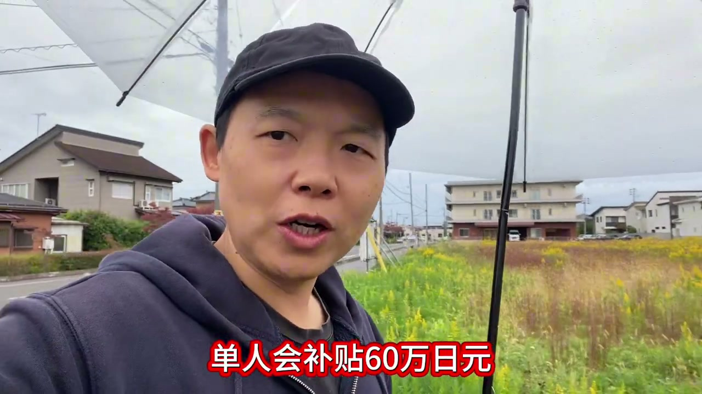
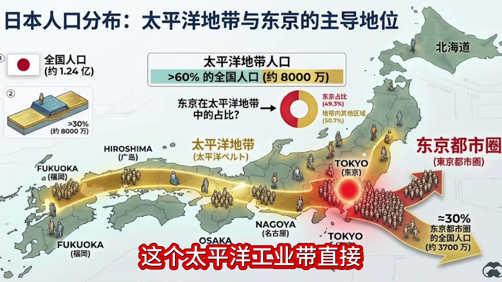

今天在日本的乡下，我想跟大家说一件事：地方政府有一个激励人才的政策，专门冲着我们这些在东京干过几年的技术者来的。
先说结论：在东京都工作了5-10年的技术者，如果愿意举家搬到地方，继续做远程在宅的开发工作，单人补贴60万日元，一家两口过来，补贴100万日元左右。

这要从东京在整个日本的地位说起。
日本有一个太平洋工业带，大家看一下这张图：这个太平洋工业带直接横贯东西整个日本，把日本分成了南北两个部分。在这条工业带上，总共有东京、大阪、名古屋、京都、福冈这些日本的大城市。

整个工业带的人口，占了日本人口的绝大部分；而在这个太平洋工业带中，东京又占到了整个工业带的50%左右。所以整个东京在日本总体人口里的比例，大概是三分之一左右。
所以说，东京人会把东京以外的地方，都叫做"乡下"。
这是有道理的，因为他们占据了整个日本人口的三分之一左右。
正是因为人口这种密集型的集中，所以地方政府为了抢人口，不得已推出了刚才我说的优惠政策：从东京搬到地方去生活，又有远程的工作，那么地方政府就愿意去补贴，将近百万日元。这就是这项政策的由来。
说白了，就是城市化的进程中，大都市对人才的吸引实在是太强了。
地方政府的人口流失非常严重，很多地方的房子都已经荒了，地都已经没人种了。
还有一堆"遗产"，这些所谓的遗产，就是房子。都已经没有人愿意过来继承了。
因为你要继承，第一，要交税；第二，你还得把房子翻新一遍，还得装修，卧槽。所以说没有人去干这个事。
于是地方政府就推出了刚才我说的这个政策，吸引这种高端的、能够远程工作的、从东京都过来的人才。
下面这部分不是视频里的内容，是我发布前又去查的公开资料，给想认真考虑的朋友做个提醒：
补贴再多，也只是一笔搬家费。能不能长期待下去，还是要看你的工作稳不稳、家人适应不适应。